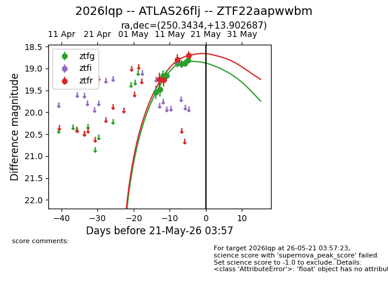
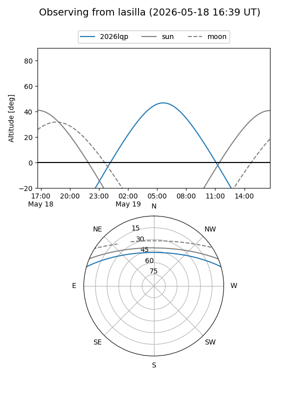
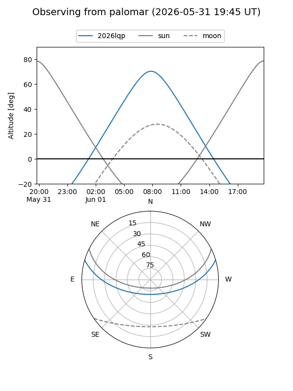
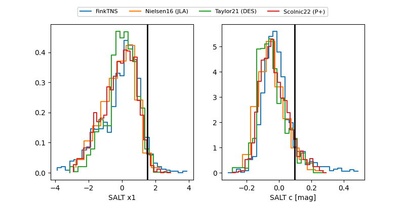

2026lqp
Target 2026lqp at 2026-05-21 03:59
Aliases and brokers:
FINK: link
Lasair: link
ALeRCE: link
TNS: link
YSE: link
alt names
ZTF22aapwwbm (ztf,fink_ztf)
2026lqp (tns,yse)
ATLAS26flj (atlas)
Coordinates:
equatorial (ra, dec) = 250.3434,+13.90269
equatorial (HMS+DMS) = 16:41:22.41,+13:54:09.67
galactic (l, b) = (31.2464,+35.02596)
Flags:
Photometry:
last ztfg=18.81, ztfr=18.70
8 ztfg, 4 ztfr detections
Lightcurve

Visibility


Additional plots
